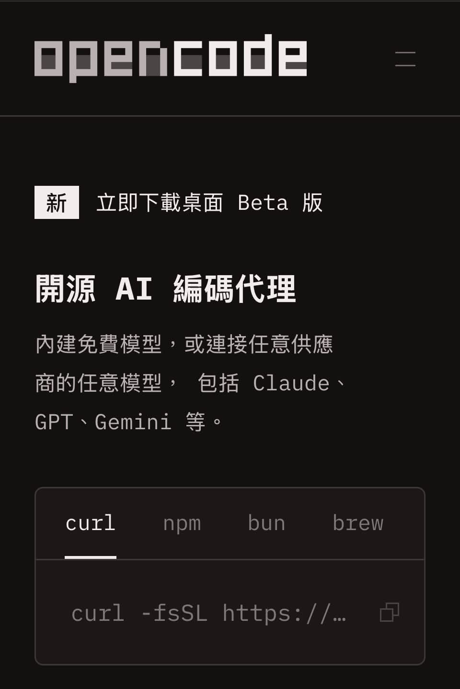

Threads｜OpenCode + 本地模型：從 Telegram 遠端控制轉向自管 Web Agent 的隱私取捨

一句話摘要
把 agent 的控制面改成自管 OpenCode Web、再搭配本地模型，確實可減少 Telegram 與第三方雲端模型的資料路徑；但公開 tunnel、Web server、工具權限與機器本身仍是安全邊界，不能把它等同於「完全隱私」。
社群實作的脈絡
@arthurlin1979 分享自己逐步把單機 agent 工作從 OpenClaw + Telegram 移到 OpenCode。其理由包括 Telegram 使用不穩、控制多台伺服器時不想讓內容繞經第三方、OpenCode Web 近期對手機較友善，以及可自行擴充、不必受 Telegram 格式限制。
貼文表示可透過 Cloudflare Tunnel 將 Web 管理介面提供遠端使用，並認為「OpenCode + 本地模型」能保護客戶資料。留言另建議 pi-web 搭配 Tailscale，反映遠端介面需要額外網路保護的共識。
這些是實作者的工作流經驗；效果取決於模型、工具、proxy、tunnel、帳號與部署設定，並非 OpenCode 對所有情境的隱私保證。
官方可確認的 OpenCode 能力
OpenCode 官方將它定位為開源 AI coding agent，提供終端機、桌面 App、IDE extension 與 Web 使用方式。官方 Web 文件指出：
- `opencode web` 會啟動 Web 介面；預設只綁定 `127.0.0.1`，並使用隨機可用 port。
- 可用 `opencode web --port 4096` 指定連接埠；用 `--hostname 0.0.0.0` 才會讓區網可連。
- 若沒有設定 `OPENCODE_SERVER_PASSWORD`，Web server 沒有安全保護。官方說本機使用可接受，但網路存取時應設定密碼。
- 官方也提供 MCP server、agent、tool、permission 等設定文件；這表示「能做什麼」與「能碰到哪些資料」必須由部署者明確限制。
- 專案採 MIT License，包含 build（全權開發）與 plan（預設唯讀、bash 指令需核准）等內建 agent 角色。
Cloudflare Tunnel 是可用的通用網路方案，但本次 OpenCode 官方 Web 文件沒有把它列為預設或自動安全機制；因此本文不把「開 tunnel」描述成 OpenCode 原生保護功能。
隱私與安全：三件不同的事
- **推論資料路徑**：用本地模型可避免 prompt 與原始檔被送至外部模型 API；但須確認沒有啟用雲端 provider、遙測、外部 MCP 或網頁搜尋工具。
- **遠端存取面**：Cloudflare Tunnel、Tailscale 或反向代理可讓手機連回 Web UI，也同時增加外部入口。至少需強密碼、身分驗證、HTTPS、最小暴露時間與可撤銷的 access policy。
- **工具執行面**：即使模型完全在本機，只要 agent 擁有 shell、檔案、Git、瀏覽器或伺服器權限，錯誤指令或提示注入仍可能造成資料外洩或破壞。
一個更穩妥的部署清單
- 初次只在 `127.0.0.1` 跑 `opencode web`，確認工作流與權限；不要先綁 `0.0.0.0`。
- 遠端需求優先選私有 overlay network（例如 Tailscale）或受身分驗證保護的 tunnel；設定 `OPENCODE_SERVER_PASSWORD` 並使用額外登入層。
- 用獨立 OS 帳號／container 服務，僅掛載專案資料夾；不要讓 agent 可讀取 SSH key、密碼庫、瀏覽器 profile 或完整 home directory。
- 對 shell、部署、刪檔、外傳與付費操作設定核准或唯讀 plan agent；先在測試 repo 演練。
- 定期檢查 provider 設定、MCP 設定、tunnel access log 與 API key，確保「本地」沒有在某個外掛環節變成外送。
原始與官方來源
- Threads 分享：https://www.threads.com/share/_eYN-IuCL/
- Threads canonical：https://www.threads.com/@arthurlin1979/post/DdV5Kb3E7y0
- OpenCode 文件：https://opencode.ai/docs
- OpenCode Web 文件：https://opencode.ai/docs/web
- OpenCode GitHub：https://github.com/anomalyco/opencode